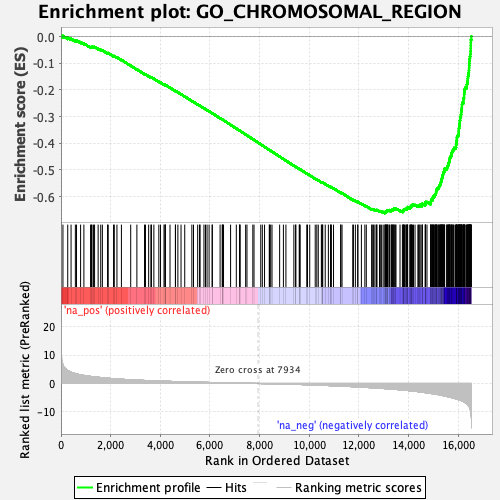

| | | Dataset | DE_genes2 |
| Phenotype | NoPhenotypeAvailable |
| Upregulated in class | na_neg |
| GeneSet | GO_CHROMOSOMAL_REGION |
| Enrichment Score (ES) | -0.6624708 |
| Normalized Enrichment Score (NES) | -2.2773242 |
| Nominal p-value | 0.0 |
| FDR q-value | 0.0 |
| FWER p-Value | 0.0 |
Table: GSEA Results Summary

Fig 1: Enrichment plot: GO_CHROMOSOMAL_REGION
Profile of the Running ES Score & Positions of GeneSet Members on the Rank Ordered List
| PROBE | GENE SYMBOL | GENE_TITLE | RANK IN GENE LIST | RANK METRIC SCORE | RUNNING ES | CORE ENRICHMENT | | 1 | DCTN2 | | | 78 | 6.594 | 0.0024 | No |
| 2 | ZNFX1 | | | 271 | 4.568 | -0.0045 | No |
| 3 | PML | | | 405 | 3.956 | -0.0084 | No |
| 4 | TFIP11 | | | 578 | 3.483 | -0.0152 | No |
| 5 | TERF2IP | | | 625 | 3.362 | -0.0144 | No |
| 6 | SIRT2 | | | 789 | 3.063 | -0.0211 | No |
| 7 | MAD1L1 | | | 922 | 2.842 | -0.0261 | No |
| 8 | SMG6 | | | 1190 | 2.482 | -0.0399 | No |
| 9 | SIRT6 | | | 1229 | 2.441 | -0.0396 | No |
| 10 | PSEN1 | | | 1249 | 2.418 | -0.0381 | No |
| 11 | DCTN1 | | | 1311 | 2.346 | -0.0393 | No |
| 12 | DCTN5 | | | 1352 | 2.316 | -0.0393 | No |
| 13 | SUMO3 | | | 1496 | 2.180 | -0.0457 | No |
| 14 | PPP2R1A | | | 1600 | 2.090 | -0.0498 | No |
| 15 | DYNLL1 | | | 1666 | 2.024 | -0.0516 | No |
| 16 | PPP1CA | | | 1875 | 1.859 | -0.0624 | No |
| 17 | RANGAP1 | | | 1901 | 1.838 | -0.0619 | No |
| 18 | SCMH1 | | | 2116 | 1.671 | -0.0733 | No |
| 19 | TP53BP1 | | | 2146 | 1.651 | -0.0733 | No |
| 20 | CENPT | | | 2253 | 1.586 | -0.0781 | No |
| 21 | SUN2 | | | 2433 | 1.473 | -0.0875 | No |
| 22 | UPF1 | | | 2807 | 1.281 | -0.1091 | No |
| 23 | XRCC1 | | | 3056 | 1.173 | -0.1231 | No |
| 24 | RTEL1 | | | 3364 | 1.052 | -0.1409 | No |
| 25 | TOX4 | | | 3402 | 1.038 | -0.1420 | No |
| 26 | DDB1 | | | 3530 | 0.996 | -0.1487 | No |
| 27 | TEP1 | | | 3620 | 0.960 | -0.1532 | No |
| 28 | SEC13 | | | 3643 | 0.954 | -0.1535 | No |
| 29 | PHF2 | | | 3740 | 0.916 | -0.1584 | No |
| 30 | DNMT3A | | | 3940 | 0.854 | -0.1697 | No |
| 31 | NDE1 | | | 4008 | 0.835 | -0.1730 | No |
| 32 | CLASP1 | | | 4148 | 0.794 | -0.1807 | No |
| 33 | MBD6 | | | 4194 | 0.779 | -0.1826 | No |
| 34 | TINF2 | | | 4198 | 0.779 | -0.1819 | No |
| 35 | DCTN3 | | | 4199 | 0.779 | -0.1811 | No |
| 36 | RASSF2 | | | 4390 | 0.722 | -0.1920 | No |
| 37 | KDM4D | | | 4606 | 0.661 | -0.2045 | No |
| 38 | MEAF6 | | | 4612 | 0.659 | -0.2041 | No |
| 39 | PIWIL2 | | | 4707 | 0.636 | -0.2092 | No |
| 40 | HSF1 | | | 4834 | 0.610 | -0.2163 | No |
| 41 | LRWD1 | | | 4983 | 0.574 | -0.2248 | No |
| 42 | AURKC | | | 5270 | 0.499 | -0.2419 | No |
| 43 | DOT1L | | | 5336 | 0.483 | -0.2454 | No |
| 44 | ZSCAN4 | | | 5504 | 0.449 | -0.2551 | No |
| 45 | PMF1 | | | 5580 | 0.431 | -0.2593 | No |
| 46 | MEN1 | | | 5601 | 0.427 | -0.2601 | No |
| 47 | RCC2 | | | 5757 | 0.393 | -0.2692 | No |
| 48 | NDEL1 | | | 5819 | 0.381 | -0.2725 | No |
| 49 | THOC5 | | | 5882 | 0.370 | -0.2759 | No |
| 50 | ZNF276 | | | 5964 | 0.353 | -0.2806 | No |
| 51 | PPP1R10 | | | 6086 | 0.328 | -0.2876 | No |
| 52 | MBD5 | | | 6095 | 0.326 | -0.2878 | No |
| 53 | DYNC1I1 | | | 6407 | 0.262 | -0.3067 | No |
| 54 | TRAPPC12 | | | 6496 | 0.246 | -0.3118 | No |
| 55 | XRCC5 | | | 6499 | 0.246 | -0.3117 | No |
| 56 | SP100 | | | 6519 | 0.240 | -0.3126 | No |
| 57 | CEBPB | | | 6545 | 0.234 | -0.3139 | No |
| 58 | CTC1 | | | 6830 | 0.180 | -0.3312 | No |
| 59 | DYNC1LI2 | | | 7060 | 0.143 | -0.3451 | No |
| 60 | ZBTB48 | | | 7188 | 0.119 | -0.3528 | No |
| 61 | WRNIP1 | | | 7205 | 0.115 | -0.3536 | No |
| 62 | SLX4 | | | 7210 | 0.114 | -0.3538 | No |
| 63 | CENPW | | | 7436 | 0.075 | -0.3675 | No |
| 64 | RNF8 | | | 7489 | 0.067 | -0.3707 | No |
| 65 | STAG3 | | | 7725 | 0.029 | -0.3851 | No |
| 66 | REC8 | | | 7773 | 0.021 | -0.3880 | No |
| 67 | WDR82 | | | 8045 | -0.019 | -0.4047 | No |
| 68 | RPA2 | | | 8108 | -0.028 | -0.4084 | No |
| 69 | CENPB | | | 8197 | -0.041 | -0.4138 | No |
| 70 | KDM1A | | | 8391 | -0.075 | -0.4256 | No |
| 71 | EZH1 | | | 8393 | -0.075 | -0.4256 | No |
| 72 | TELO2 | | | 8444 | -0.084 | -0.4286 | No |
| 73 | PSEN2 | | | 8498 | -0.093 | -0.4318 | No |
| 74 | CENPV | | | 8805 | -0.152 | -0.4504 | No |
| 75 | ZNF207 | | | 8957 | -0.183 | -0.4595 | No |
| 76 | SIN3A | | | 9058 | -0.205 | -0.4655 | No |
| 77 | SS18L1 | | | 9378 | -0.284 | -0.4848 | No |
| 78 | WRAP53 | | | 9450 | -0.303 | -0.4889 | No |
| 79 | XRCC6 | | | 9456 | -0.304 | -0.4888 | No |
| 80 | DCTN4 | | | 9595 | -0.338 | -0.4970 | No |
| 81 | UVRAG | | | 9604 | -0.340 | -0.4971 | No |
| 82 | PPP2CB | | | 9632 | -0.347 | -0.4984 | No |
| 83 | SYCP3 | | | 9898 | -0.427 | -0.5142 | No |
| 84 | NLRP2 | | | 9927 | -0.436 | -0.5155 | No |
| 85 | SIRT7 | | | 10017 | -0.465 | -0.5205 | No |
| 86 | DCLRE1B | | | 10238 | -0.536 | -0.5334 | No |
| 87 | CSNK1A1 | | | 10302 | -0.555 | -0.5367 | No |
| 88 | ERCC1 | | | 10361 | -0.573 | -0.5396 | No |
| 89 | SNAI1 | | | 10485 | -0.615 | -0.5466 | No |
| 90 | TNKS | | | 10513 | -0.630 | -0.5475 | No |
| 91 | NSMCE1 | | | 10519 | -0.632 | -0.5472 | No |
| 92 | NUP85 | | | 10541 | -0.640 | -0.5478 | No |
| 93 | NSMCE2 | | | 10641 | -0.675 | -0.5531 | No |
| 94 | NUP98 | | | 10768 | -0.713 | -0.5601 | No |
| 95 | KAT8 | | | 10855 | -0.743 | -0.5646 | No |
| 96 | APEX1 | | | 10872 | -0.755 | -0.5648 | No |
| 97 | CDK2 | | | 10886 | -0.760 | -0.5647 | No |
| 98 | TERF2 | | | 10975 | -0.790 | -0.5693 | No |
| 99 | CFDP1 | | | 11263 | -0.909 | -0.5860 | No |
| 100 | KAT2B | | | 11269 | -0.911 | -0.5853 | No |
| 101 | ANAPC16 | | | 11318 | -0.934 | -0.5872 | No |
| 102 | HIRA | | | 11750 | -1.109 | -0.6126 | No |
| 103 | CBX1 | | | 11777 | -1.119 | -0.6130 | No |
| 104 | NABP2 | | | 11855 | -1.156 | -0.6165 | No |
| 105 | PINX1 | | | 11950 | -1.196 | -0.6209 | No |
| 106 | DYNC1LI1 | | | 11956 | -1.198 | -0.6199 | No |
| 107 | PPP2CA | | | 12098 | -1.272 | -0.6272 | No |
| 108 | DCTN6 | | | 12237 | -1.343 | -0.6343 | No |
| 109 | TERT | | | 12295 | -1.372 | -0.6363 | No |
| 110 | KANSL1 | | | 12510 | -1.477 | -0.6479 | No |
| 111 | NABP1 | | | 12535 | -1.493 | -0.6477 | No |
| 112 | SALL1 | | | 12580 | -1.524 | -0.6488 | No |
| 113 | RAD51D | | | 12611 | -1.538 | -0.6490 | No |
| 114 | CENPL | | | 12686 | -1.583 | -0.6518 | No |
| 115 | XRCC3 | | | 12710 | -1.592 | -0.6515 | No |
| 116 | PTGES3 | | | 12724 | -1.600 | -0.6506 | No |
| 117 | DNMT1 | | | 12826 | -1.669 | -0.6550 | No |
| 118 | NHP2 | | | 12859 | -1.693 | -0.6551 | No |
| 119 | NSMCE4A | | | 12912 | -1.723 | -0.6564 | No |
| 120 | CTCF | | | 12974 | -1.752 | -0.6583 | No |
| 121 | KIF22 | | | 13043 | -1.792 | -0.6605 | Yes |
| 122 | NSL1 | | | 13055 | -1.802 | -0.6592 | Yes |
| 123 | CENPP | | | 13066 | -1.809 | -0.6579 | Yes |
| 124 | CLIP1 | | | 13072 | -1.812 | -0.6562 | Yes |
| 125 | RPA1 | | | 13109 | -1.830 | -0.6565 | Yes |
| 126 | POLD1 | | | 13115 | -1.833 | -0.6548 | Yes |
| 127 | ACD | | | 13133 | -1.845 | -0.6538 | Yes |
| 128 | CENPM | | | 13147 | -1.858 | -0.6526 | Yes |
| 129 | PPP2R5A | | | 13164 | -1.869 | -0.6516 | Yes |
| 130 | BOD1 | | | 13214 | -1.899 | -0.6525 | Yes |
| 131 | SUV39H1 | | | 13225 | -1.906 | -0.6511 | Yes |
| 132 | DYNLT3 | | | 13291 | -1.949 | -0.6530 | Yes |
| 133 | THOC3 | | | 13315 | -1.965 | -0.6522 | Yes |
| 134 | SMC1A | | | 13325 | -1.971 | -0.6506 | Yes |
| 135 | SYCP2L | | | 13346 | -1.986 | -0.6497 | Yes |
| 136 | CENPO | | | 13365 | -2.007 | -0.6487 | Yes |
| 137 | CDT1 | | | 13400 | -2.026 | -0.6485 | Yes |
| 138 | NGDN | | | 13404 | -2.027 | -0.6465 | Yes |
| 139 | NAT10 | | | 13424 | -2.039 | -0.6455 | Yes |
| 140 | PARP1 | | | 13479 | -2.088 | -0.6465 | Yes |
| 141 | HMBOX1 | | | 13486 | -2.093 | -0.6446 | Yes |
| 142 | ALYREF | | | 13653 | -2.199 | -0.6525 | Yes |
| 143 | GAR1 | | | 13749 | -2.282 | -0.6558 | Yes |
| 144 | MCM3 | | | 13783 | -2.315 | -0.6554 | Yes |
| 145 | THOC6 | | | 13784 | -2.316 | -0.6528 | Yes |
| 146 | NCAPD2 | | | 13788 | -2.321 | -0.6505 | Yes |
| 147 | PPP2R5C | | | 13807 | -2.335 | -0.6491 | Yes |
| 148 | CKAP5 | | | 13831 | -2.355 | -0.6479 | Yes |
| 149 | MCM5 | | | 13861 | -2.378 | -0.6471 | Yes |
| 150 | DSN1 | | | 13907 | -2.424 | -0.6473 | Yes |
| 151 | FEN1 | | | 13911 | -2.426 | -0.6448 | Yes |
| 152 | MCM7 | | | 13952 | -2.457 | -0.6446 | Yes |
| 153 | SUGT1 | | | 13953 | -2.458 | -0.6420 | Yes |
| 154 | INCENP | | | 13962 | -2.468 | -0.6398 | Yes |
| 155 | NEK2 | | | 14051 | -2.552 | -0.6424 | Yes |
| 156 | RECQL4 | | | 14062 | -2.561 | -0.6403 | Yes |
| 157 | NUP37 | | | 14072 | -2.573 | -0.6380 | Yes |
| 158 | CLASP2 | | | 14107 | -2.602 | -0.6373 | Yes |
| 159 | PPP1CC | | | 14114 | -2.608 | -0.6348 | Yes |
| 160 | NCAPD3 | | | 14122 | -2.615 | -0.6324 | Yes |
| 161 | NUP43 | | | 14154 | -2.649 | -0.6314 | Yes |
| 162 | DMC1 | | | 14196 | -2.689 | -0.6310 | Yes |
| 163 | KNSTRN | | | 14258 | -2.748 | -0.6318 | Yes |
| 164 | NUP133 | | | 14373 | -2.856 | -0.6357 | Yes |
| 165 | ORC5 | | | 14402 | -2.879 | -0.6343 | Yes |
| 166 | LIG4 | | | 14451 | -2.938 | -0.6341 | Yes |
| 167 | EID3 | | | 14459 | -2.945 | -0.6313 | Yes |
| 168 | CENPU | | | 14542 | -3.039 | -0.6331 | Yes |
| 169 | PAFAH1B1 | | | 14547 | -3.042 | -0.6300 | Yes |
| 170 | BUB3 | | | 14549 | -3.043 | -0.6268 | Yes |
| 171 | MIS12 | | | 14669 | -3.210 | -0.6306 | Yes |
| 172 | THOC7 | | | 14672 | -3.211 | -0.6273 | Yes |
| 173 | ZW10 | | | 14679 | -3.216 | -0.6241 | Yes |
| 174 | FBXO28 | | | 14681 | -3.219 | -0.6207 | Yes |
| 175 | PPP1CB | | | 14739 | -3.295 | -0.6206 | Yes |
| 176 | NUP160 | | | 14887 | -3.486 | -0.6259 | Yes |
| 177 | PCNA | | | 14896 | -3.501 | -0.6226 | Yes |
| 178 | PRKDC | | | 14897 | -3.502 | -0.6188 | Yes |
| 179 | MCM4 | | | 14906 | -3.510 | -0.6155 | Yes |
| 180 | TNKS2 | | | 14910 | -3.523 | -0.6118 | Yes |
| 181 | ORC3 | | | 14965 | -3.594 | -0.6112 | Yes |
| 182 | ZNF330 | | | 14969 | -3.596 | -0.6075 | Yes |
| 183 | MSH2 | | | 14972 | -3.606 | -0.6037 | Yes |
| 184 | NUP107 | | | 15003 | -3.655 | -0.6016 | Yes |
| 185 | MCM2 | | | 15006 | -3.658 | -0.5978 | Yes |
| 186 | BAZ1B | | | 15050 | -3.719 | -0.5964 | Yes |
| 187 | HNRNPU | | | 15058 | -3.735 | -0.5927 | Yes |
| 188 | SPC24 | | | 15084 | -3.765 | -0.5902 | Yes |
| 189 | CENPN | | | 15099 | -3.785 | -0.5869 | Yes |
| 190 | ZWINT | | | 15107 | -3.798 | -0.5832 | Yes |
| 191 | MIS18A | | | 15108 | -3.798 | -0.5791 | Yes |
| 192 | CENPI | | | 15122 | -3.810 | -0.5758 | Yes |
| 193 | SUV39H2 | | | 15132 | -3.824 | -0.5722 | Yes |
| 194 | LRIF1 | | | 15153 | -3.852 | -0.5692 | Yes |
| 195 | ERCC4 | | | 15195 | -3.914 | -0.5675 | Yes |
| 196 | ATM | | | 15219 | -3.945 | -0.5646 | Yes |
| 197 | CDCA8 | | | 15225 | -3.955 | -0.5607 | Yes |
| 198 | ITGB3BP | | | 15248 | -4.001 | -0.5577 | Yes |
| 199 | SEH1L | | | 15275 | -4.073 | -0.5548 | Yes |
| 200 | RAD51 | | | 15283 | -4.088 | -0.5508 | Yes |
| 201 | RAD17 | | | 15291 | -4.101 | -0.5468 | Yes |
| 202 | CHEK2 | | | 15311 | -4.128 | -0.5435 | Yes |
| 203 | ORC4 | | | 15318 | -4.149 | -0.5394 | Yes |
| 204 | CHAMP1 | | | 15322 | -4.154 | -0.5350 | Yes |
| 205 | SPAG5 | | | 15339 | -4.181 | -0.5315 | Yes |
| 206 | EZH2 | | | 15352 | -4.214 | -0.5276 | Yes |
| 207 | BOD1L1 | | | 15365 | -4.231 | -0.5238 | Yes |
| 208 | KDM4C | | | 15370 | -4.241 | -0.5194 | Yes |
| 209 | SETX | | | 15386 | -4.266 | -0.5157 | Yes |
| 210 | CDCA5 | | | 15393 | -4.273 | -0.5114 | Yes |
| 211 | POLR2B | | | 15412 | -4.323 | -0.5079 | Yes |
| 212 | DNA2 | | | 15436 | -4.365 | -0.5045 | Yes |
| 213 | CBX5 | | | 15439 | -4.369 | -0.4999 | Yes |
| 214 | ATR | | | 15446 | -4.382 | -0.4955 | Yes |
| 215 | CBX3 | | | 15520 | -4.527 | -0.4951 | Yes |
| 216 | POT1 | | | 15549 | -4.580 | -0.4918 | Yes |
| 217 | SKA2 | | | 15559 | -4.611 | -0.4874 | Yes |
| 218 | ZWILCH | | | 15582 | -4.659 | -0.4837 | Yes |
| 219 | ATRX | | | 15599 | -4.719 | -0.4796 | Yes |
| 220 | AURKA | | | 15607 | -4.737 | -0.4748 | Yes |
| 221 | PLK1 | | | 15623 | -4.763 | -0.4706 | Yes |
| 222 | CCNB1 | | | 15643 | -4.796 | -0.4665 | Yes |
| 223 | CENPC | | | 15651 | -4.807 | -0.4618 | Yes |
| 224 | OIP5 | | | 15659 | -4.836 | -0.4569 | Yes |
| 225 | KNTC1 | | | 15665 | -4.846 | -0.4520 | Yes |
| 226 | NUDCD2 | | | 15699 | -4.910 | -0.4487 | Yes |
| 227 | HNRNPA2B1 | | | 15720 | -4.948 | -0.4445 | Yes |
| 228 | BLM | | | 15728 | -4.957 | -0.4396 | Yes |
| 229 | BIRC5 | | | 15741 | -4.998 | -0.4349 | Yes |
| 230 | PDS5B | | | 15754 | -5.018 | -0.4302 | Yes |
| 231 | ORC1 | | | 15778 | -5.075 | -0.4261 | Yes |
| 232 | CDK1 | | | 15810 | -5.156 | -0.4224 | Yes |
| 233 | MCM6 | | | 15829 | -5.218 | -0.4178 | Yes |
| 234 | PDS5A | | | 15889 | -5.372 | -0.4156 | Yes |
| 235 | XPO1 | | | 15911 | -5.423 | -0.4110 | Yes |
| 236 | APC | | | 15912 | -5.426 | -0.4052 | Yes |
| 237 | CDC73 | | | 15926 | -5.457 | -0.4000 | Yes |
| 238 | RAD21 | | | 15930 | -5.459 | -0.3943 | Yes |
| 239 | HELLS | | | 15936 | -5.474 | -0.3886 | Yes |
| 240 | FMR1 | | | 15943 | -5.491 | -0.3830 | Yes |
| 241 | AHCTF1 | | | 15945 | -5.493 | -0.3771 | Yes |
| 242 | CHEK1 | | | 15965 | -5.552 | -0.3723 | Yes |
| 243 | TPR | | | 16001 | -5.664 | -0.3683 | Yes |
| 244 | SMC5 | | | 16016 | -5.725 | -0.3629 | Yes |
| 245 | PIF1 | | | 16018 | -5.727 | -0.3568 | Yes |
| 246 | NBN | | | 16021 | -5.731 | -0.3507 | Yes |
| 247 | TERF1 | | | 16025 | -5.742 | -0.3446 | Yes |
| 248 | DCLRE1A | | | 16034 | -5.780 | -0.3388 | Yes |
| 249 | MAD2L1 | | | 16043 | -5.805 | -0.3330 | Yes |
| 250 | GPATCH11 | | | 16050 | -5.815 | -0.3271 | Yes |
| 251 | ORC2 | | | 16058 | -5.843 | -0.3212 | Yes |
| 252 | KIF2C | | | 16061 | -5.848 | -0.3149 | Yes |
| 253 | WRN | | | 16074 | -5.884 | -0.3093 | Yes |
| 254 | PURA | | | 16076 | -5.891 | -0.3029 | Yes |
| 255 | HAT1 | | | 16101 | -5.959 | -0.2980 | Yes |
| 256 | THOC1 | | | 16107 | -5.970 | -0.2918 | Yes |
| 257 | SKA3 | | | 16116 | -5.989 | -0.2858 | Yes |
| 258 | AURKB | | | 16120 | -6.007 | -0.2794 | Yes |
| 259 | SPC25 | | | 16131 | -6.050 | -0.2735 | Yes |
| 260 | BUB1 | | | 16142 | -6.084 | -0.2675 | Yes |
| 261 | SKA1 | | | 16146 | -6.104 | -0.2610 | Yes |
| 262 | SMCHD1 | | | 16149 | -6.113 | -0.2545 | Yes |
| 263 | ERCC6L | | | 16159 | -6.148 | -0.2484 | Yes |
| 264 | HJURP | | | 16210 | -6.380 | -0.2445 | Yes |
| 265 | CENPH | | | 16211 | -6.387 | -0.2376 | Yes |
| 266 | CENPQ | | | 16214 | -6.395 | -0.2308 | Yes |
| 267 | SPDL1 | | | 16232 | -6.486 | -0.2248 | Yes |
| 268 | MIS18BP1 | | | 16234 | -6.494 | -0.2178 | Yes |
| 269 | DCLRE1C | | | 16240 | -6.505 | -0.2110 | Yes |
| 270 | PPP1R12A | | | 16246 | -6.545 | -0.2042 | Yes |
| 271 | DHX36 | | | 16255 | -6.577 | -0.1976 | Yes |
| 272 | RIF1 | | | 16279 | -6.762 | -0.1917 | Yes |
| 273 | BUB1B | | | 16335 | -7.102 | -0.1873 | Yes |
| 274 | ESCO2 | | | 16342 | -7.133 | -0.1800 | Yes |
| 275 | DSCC1 | | | 16359 | -7.253 | -0.1731 | Yes |
| 276 | MTBP | | | 16377 | -7.447 | -0.1660 | Yes |
| 277 | NUF2 | | | 16382 | -7.475 | -0.1582 | Yes |
| 278 | PHF6 | | | 16388 | -7.593 | -0.1502 | Yes |
| 279 | RAD50 | | | 16404 | -7.792 | -0.1427 | Yes |
| 280 | STAG2 | | | 16417 | -7.973 | -0.1348 | Yes |
| 281 | STAG1 | | | 16427 | -8.038 | -0.1266 | Yes |
| 282 | SSB | | | 16434 | -8.068 | -0.1182 | Yes |
| 283 | CENPA | | | 16438 | -8.139 | -0.1095 | Yes |
| 284 | TTK | | | 16444 | -8.189 | -0.1009 | Yes |
| 285 | SMC6 | | | 16450 | -8.331 | -0.0922 | Yes |
| 286 | SMC3 | | | 16453 | -8.381 | -0.0832 | Yes |
| 287 | THOC2 | | | 16468 | -8.629 | -0.0747 | Yes |
| 288 | CENPK | | | 16485 | -9.298 | -0.0656 | Yes |
| 289 | BRCA2 | | | 16493 | -9.707 | -0.0555 | Yes |
| 290 | KIF18A | | | 16499 | -9.952 | -0.0450 | Yes |
| 291 | CENPE | | | 16501 | -10.010 | -0.0342 | Yes |
| 292 | NCAPG | | | 16504 | -10.079 | -0.0234 | Yes |
| 293 | CENPF | | | 16507 | -10.688 | -0.0119 | Yes |
| 294 | NDC80 | | | 16527 | -12.233 | 0.0002 | Yes |
Table: GSEA details [plain text format]
Fig 2: GO_CHROMOSOMAL_REGION: Random ES distribution
Gene set null distribution of ES for GO_CHROMOSOMAL_REGION